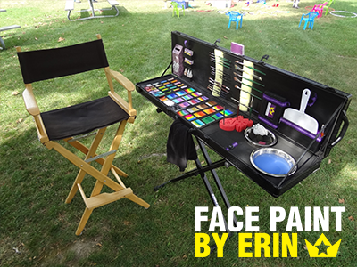
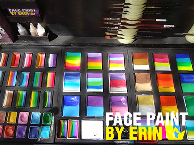
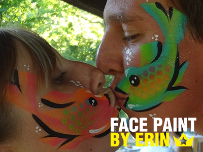
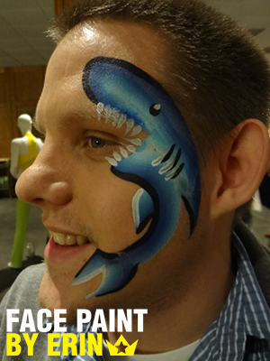

- 
- 
- 
- 
Code of Practice
We choose to work with professional-grade face paint and cosmetic glitter. The products we use have not been tested on animals, are vegan friendly and comply with FDA regulations. The face paints have glycerine and paraffin wax bases, are free of harmful perfumes, sulphates and drying agents, which allow them to be used on sensitive skin. All of our paints are easily removed with baby wipes or mild soap and water.
For the safety of all clients, we follow some basic guidelines during events:
- all paints, brushes, sponges and water are kept as clean as possible
- it is not recommended that children under two years of age be painted
- for children ages two to three years, we recommend a small design on the cheek, hand or arm only
- children/adults who are obviously unwell will not be painted (runny nose, cold sore, eczema, open wounds, etc)
- we will not paint anyone against their wishes, and will stop painting if they become uncomfortable or change their mind
Artist's Preferences
The artist reserves the right to work in a safe and comfortable environment. We supply all the equipment required to safely paint your guests' faces. With advance notice, we can also supply a gazebo, table and chairs for larger events.
When preparing an area for us at your event, we ask that you consider the following:
- for all events, an area away from loud noises to make communication with guests easier
- for all events, a well-lit area and access to water is preferable
- for outdoor events, a tent or covered area to protect from the sun and rain